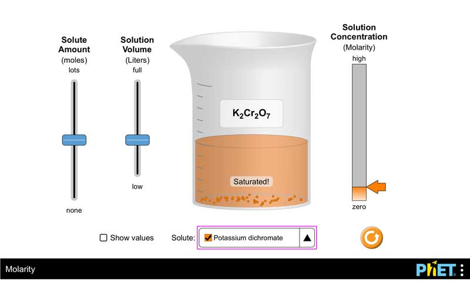
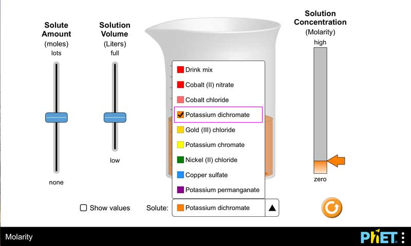
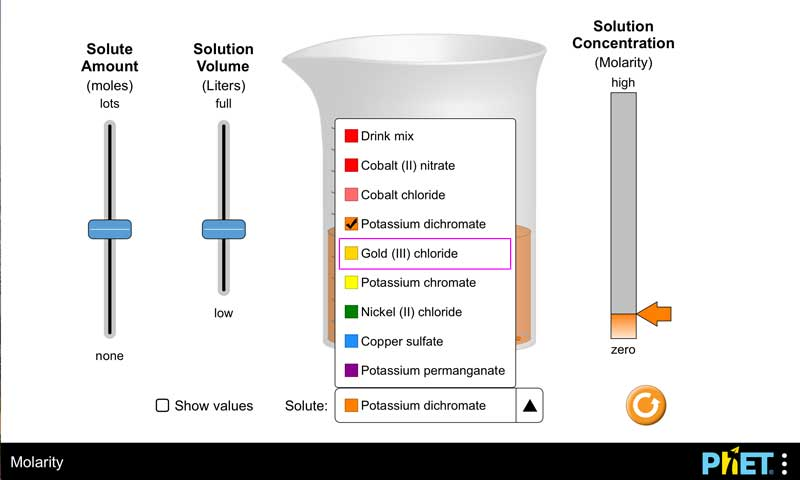

See Level Access article on combox role changes for more details.
http://whatsock.com/training/matrices/#combobox
select element with option elementsThe HTML design pattern works fine in Voice Over on Safari. The HTML size attribute can be used to make a designated number of options persist visually. This is undesirable in the case of most PhET pop-up select boxes (i.e., pop-up menus/comboboxes).
Functionally, both the Up and Down Arrow keys activate the collpased list of options. We may want to consider adjusteing the visual prompts which only indicates the Up Arrow. Also in the visual, selected item is not visually indicated. We may want to add a visual checkmark, or the mouse-hover styling
<label for="solute-options">Solute:</label> <select id="solute-options" name="select"> <option value="1">Drink mix</option> <option value="2">Colbalt (II) nitrate</option> <option value="3">Colbalt Chloride</option> <option value="4">Potassium dichromate</option> <option value="5">Gold (III) chloride</option> <option value="6">Potassium chromate</option> <option value="7">Nickel (II) chloride</option> <option value="8">Copper sulfate</option> <option value="9">Potassium permanganate</option> <option value="10">Potassium dichromate</option> </select>
Combobox is focused with the Tab key. Not sure if we need the check on the collapsed combobox.
Selected item has focus when combobox is opened (Up Arrow or Down Arrow)
Focus highlight moves with Arrow keys, and the selected item stays checked until Enter key pressed. Combobox closes when the the item is selected witht eh Enter key.
ARIA 1.1 design pattern is not yet supported. Both the 1.1 and 1.0 options seem very complicated to me. And since our PDOM is visually hidden, I think HTML solution above is better for us.
The three attributes on the focusable HTML input element with role="combobox":
aria-expandedaria-controlsaria-activedescendant